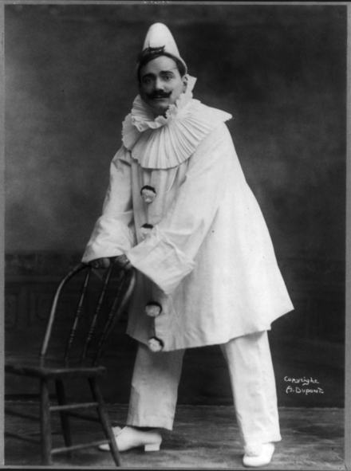

Pizza and Chatbots: Wouldn’t It Be Loverly!- Meeting ELIZA
Sharing about a data event hosted at SUNY-Old Westbury.
Python
AI
Author
Joe Sferra
Published
November 14, 2024
Meeting Eliza
Yesterday, I attended the second in a series of yearly events hosted by SUNY-Old Westbury. Professors and students from computer science, math, physics, and other areas came together to learn about the first chatbot, ELIZA, and see how the code in Python would work. Professor Frank Sanacory took us through ELIZA and we learned a lot!
Imagine being able to use a computer like a therapist. You type in things about what you’re feeling, and the computer responds in ways that a mental health professional might: asking you questions, prompting you to clarify or elaborate on what you’ve already said. This approach was pioneered by Joseph Weizenbaum in the 1960s. Take a look at a representative conversation from ELIZA (Eliza’s responses are in all caps).
Men are all alike.
IN WHAT WAY?
They’re always bugging us about something or other.
CAN YOU THINK OF A SPECIFIC EXAMPLE?
Well, my boyfriend made me come here.
YOUR BOYFRIEND MADE YOU COME HERE?
He says I’m depressed much of the time.
I AM SORRY TO HEAR YOU ARE DEPRESSED.
It’s true. I am unhappy.
DO YOU THINK COMING HERE WILL HELP YOU NOT TO BE UNHAPPY.
I need some help, that much seems certain.
WHAT WOULD IT MEAN TO YOU IF YOU GOT SOME HELP?
Perhaps I could learn to get along with my mother.
TELL ME MORE ABOUT YOUR FAMILY.
My mother takes care of me.
WHO ELSE IN YOUR FAMILY TAKES CARE OF YOU?
My father.
YOUR FATHER?
You are like my father in some ways.
WHAT RESEMBLANCE DO YOU SEE?
You are not very aggressive, but I think you don’t want me to notice that.
WHAT MAKES YOU THINK I AM NOT VERY AGGRESSIVE?
You don’t argue with me.
WHY DO YOU THINK I DON’T ARGUE WITH YOU?
You are afraid of me.
DOES IT PLEASE YOU TO BELIEVE I AM AFRAID OF YOU?
My father is afraid of everybody.
WHAT ELSE COMES TO YOUR MIND WHEN YOU THINK OF YOUR FATHER?
Bullies.
DOES THAT HAVE ANYTHING TO DO WITH THE FACT THAT YOUR BOYFRIEND MADE YOU COME HERE?
Weizenbaum, Joseph “ELIZA – A Computer Program For the Study of Natural Language Communication Between Man and Machine” in: Communications of the ACM; Volume 9, Issue 1 (January 1966): p 36-45.
Rules for Interacting
There’s a story that I can’t find online anymore about how the great opera singer Enrico Caruso had to pass himself off as knowing a lot more languages than he actually knew to make it in the opera world, so he would just parrot the last few words anyone said to him in a conversation to make it seem like he knew what was going on. Not the most bracing chat, but it would do in a pinch.

‘I’m tired so I’m taking the rest of the night off.’ ‘Taking the rest of the night off, huh?’
Caruso’s strategy was a basic rule to respond to other people talking without giving away that he didn’t really know what was going on. Start stacking a few rules like this on top of each other and you get a chatbot. With some time with this dialogue, we could brainstorm some of the patterns and functions that ELIZA uses to respond to input in a human-like way:
When a user says “always,” ask them to give you an example.
When a user mentions their family, ask them to tell you more about their family.
If the user says a phrase with “I” or “you”, flip it to “you” or “I” and rephrase it back.
There’s obviously a lot more going on here, but we can already see some steps falling into place with these guidelines.
Why Eliza?
Before we talk a little Python, I have to briefly tell you about why this chatbot was named ELIZA. “She” is named for Eliza Doolittle, the filthy cockney flower salesgirl in George Bernard Shaw’s “Pygmalion”, who through a grueling series of speaking exercises led by Dr. Henry Higgins, passes herself off at a high-society ball as a Hungarian princess. In the same way that her repeated exercises made her a better speaker, Weizenbaum noticed that repeated use and input from multiple users refined ELIZA’s performance in a similar way. I know Eliza Doolittle from the musical adaptation, “My Fair Lady”- notice her incredible transformation throughout!
I’ll take any excuse to fawn over Audrey Hepburn.
Preliminary Python- String Manipulation
Professor Sanacory took us through some of the Python we would need to make our own version of Eliza. We have to really get right with string manipulation, as the human input will be typed in in a string format. Two techniques he suggested included making all your code only deal with lowercase text and changing the user input to lowercase before you do anything with it. Another technique is to take the human input and break it up into a list of words so you can isolate words that would cue the bot like “family”, “father”, “always”, “I”, “you”, or others!
import stringdef lower_split(mystring):# Takes in string input from human. # Converts to lowercase, removes punctuation, then # splits into a list of strings representing each word mystring = mystring.lower() nopunct = mystring.translate(str.maketrans('', '', string.punctuation))print(nopunct.split(" "))lower_split("I LOve My FaIr LADY.")
['i', 'love', 'my', 'fair', 'lady']
You can start imagining next steps, right? Eliminating redundant spaces, keeping question marks in the input, and overall, working to standardize the input as much as possible so differences between how different people type get flattened out.
Next Steps?
I’m not just going to copy and paste the bot code in here. That wouldn’t be fun. I want to sit with the code we looked at yesterday and try to make it my own. I think it would be fun to make a bot that responds not like Eliza Doolittle, but Henry Higgins, the flamboyant and impatient bachelor flinging insults, asking for his slippers, and criticizing any of your mistakes in written English. Or a chatbot that isn’t particularly good at its job, peppering in truisms like “It is what it is.” or “That’s showbiz, baby.” My wife mentioned that the ELIZA exchange sounded like a Meisner technique acting exercise where actors repeat each other’s words, so maybe there’s something in there to explore too. I have a couple other projects going on, so this will probably have to wait for Christmas break, but it’s always fun to start thinking about a new project!